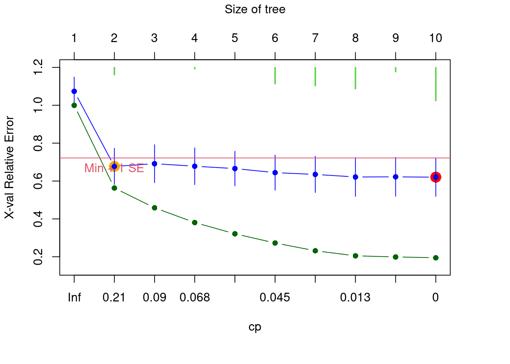
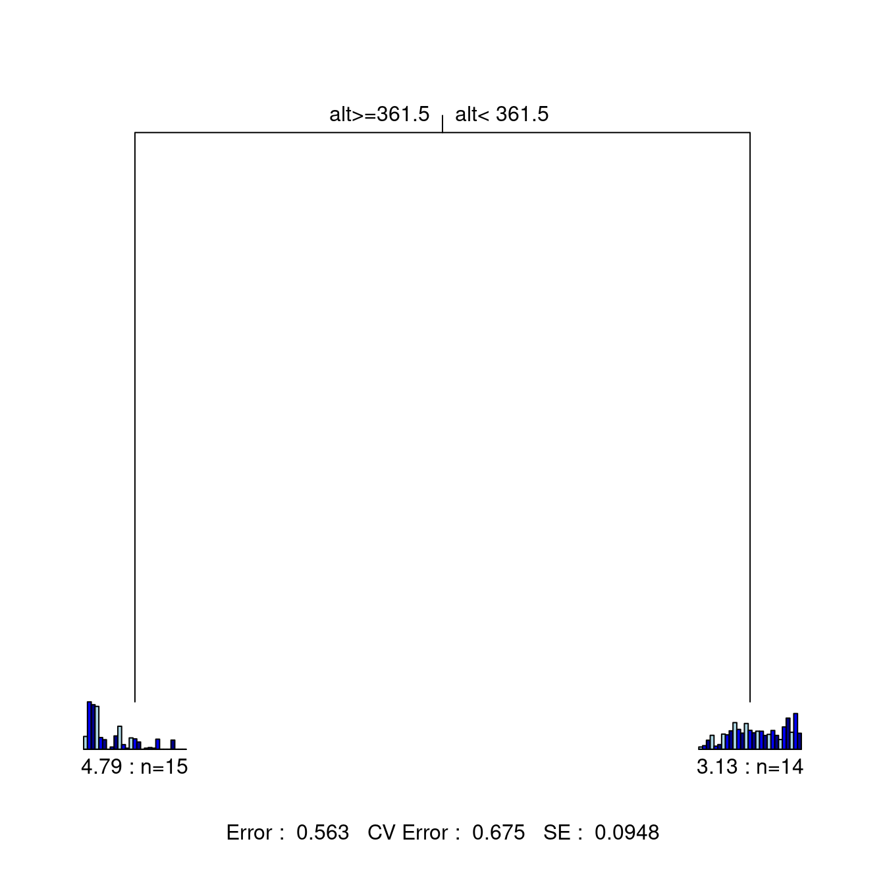
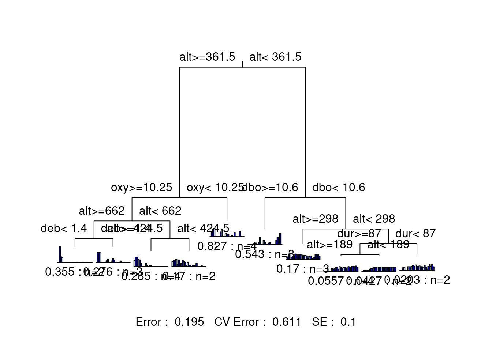

Chapitre 9 Arbre de régression multivarié
L’arbre de régression multivarié (MRT) est une technique de groupement hiérarchique. Introduit par De’ath (2002), le MRT divise une matrice de réponse (\(Y\)) en groupes en fonction de seuils de variables explicatives (\(X\)). Comme la RDA, la MRT est une technique de régression. Alors que la première explique la structure globale des relations par un modèle linéaire, la seconde produit un modèle en arbre pour mettre en évidence les structures locales et les interactions entre les variables.

Figure 9.1: The basic structure of a multivariate regression tree (MRT).
L’arbre de régression multivarié a plusieurs charéctéristiques avantageux:
- Les résultats sont faciles à visualiser et à interpréter (c’est un arbre !) ;
- Il identifie clairement l’importance des variables explicatives ;
- Il est robuste aux valeurs manquantes ;
- Il est robuste à la colinéarité entre les variables explicatives ;
- Il peut traiter des variables explicatives brutes, alors il n’est pas nécessaire de les standardiser.
Une petite note sur le vocabulaire lié aux MRTs:
- Branches: Chaque lignée formée par un noeud;
- Noeuds: Point où les données se divisent en 2 groupes (caractérisé par une valeur seuil d’une variable explicative);
- Feuilles: Groupe terminal de sites.
9.1 Computation
Le MRT divise les données en groupes ayant des compositions en espèce semblables et caractérisés par des variables environnementales. La méthode implique deux volets s’effectuant en parallèle: 1) la construction de l’arbre et 2) la sélection de la partition finale optimale par validation croisée. The MRT splits the data into clusters of samples similar in their species composition based on environmental value thresholds. It involves two procedures running at the same time: 1) the computation of the constrained partitioning of the data, and 2) the calculation of the relative error of the successive partitioning levels by multiple cross-validations. Cette validation croisée vise, en fait, à identifier le meilleur arbre prédictif. Le “meilleur” arbre varie en fonction des objectifs de votre étude. En général, on cherche un arbre qui est parcimonieux, mais qui possède un nombre de groupes informatif. Il s’agit, bien entendu, d’une décision subjective à prendre en fonction de la question à laquelle vous tentez de répondre.
9.1.1 Construction de l’arbre: Partitionnement des données sous contrainte
Premièrement, la méthode calcule toutes les partitions des sites en deux groupes. Pour chaque variable environnementale quantitative, les sites seront classés en ordre croissant des valeurs; pour chaque variable qualitative (ou catégorique), les sites seront classés par niveaux. La méthode divise les données après le premier objet, après le second, et ainsi de suite et calcule à chaque fois la somme des carrés des écarts intra-groupes de la matrice réponse. La méthode choisira la partition qui minimisera la somme des carrés des écarts intra-groupes et le point de division défini par une valeur seuil d’une variable environnementale. Ces étapes seront répétées dans les deux groupes formés précédemment, jusqu’à ce que tous les objets forment leur propre groupe. En d’autre mots, jusqu’à ce que chaque feuille de l’arbre de contienne qu’un seul objet.
9.1.2 Sélection de l’arbre: Validation croisée et élagage de l’arbre
La fonction effectue également une validation croisée et identifie l’arbre ayant le meilleur pouvoir prédictif. La validation croisée s’effectue en utilisant une partie des données pour construire l’arbre et le reste des données est classé dans les groupes créés. Dans un arbre ayant un bon pouvoir prédictif, les objets sont assignés aux groupes appropriés. L’erreur relative de validation croisée (ERVC ou CVRE) mesure l’erreur de prédiction. Sans validation croisée, le nombre de partitions retenu serait celui minimisant la variance non expliquée par l’arbre (i.e. l’erreur relative: la somme des carrés des écarts intra-groupes de toutes les feuilles divisée par la somme de carrée des écarts de toutes les données). Cette solution maximise le \(R^2\) et on obtiendrait donc un arbre explicatif plutôt que prédictif.
9.2 MRT dans R
La fonction mvpart() du paquet mvpart calcule à la fois la partition et les étapes de validation croisée requises pour construire un arbre de régression multivarié.
Nous allons démontrer le processus de construction d’un arbre de régression multivarié sur les données de la rivière Doubs.
# Enlever la variable “distance from source”
env <- subset(env, select = -das)
# Construire l'arbre de regression multivarié
doubs.mrt <- mvpart(as.matrix(spe.hel) ~ ., data = env,
xv = "pick", # selection graphique intéractive
xval = nrow(spe.hel), # nombre de validations
xvmult = 100, # nombre de validations multiples
which = 4, # identifier les noeuds
legend = FALSE, margin = 0.01, cp = 0)## X-Val rep : 1 2 3 4 5 6 7 8 9 10 11 12 13 14 15 16 17 18 19 20 21 22 23 24 25 26 27 28 29 30 31 32 33 34 35 36 37 38 39 40 41 42 43 44 45 46 47 48 49 50 51 52 53 54 55 56 57 58 59 60 61 62 63 64 65 66 67 68 69 70 71 72 73 74 75 76 77 78 79 80 81 82 83 84 85 86 87 88 89 90 91 92 93 94 95 96 97 98 99 100
## Minimum tree sizes
## tabmins
## 2 4 5 6 7 8 9 10
## 11 2 1 12 11 28 4 31
À ce stade, vous devrez sélectionner l’arbre avec un nombre approprié de groupes, en fonction de l’objectif de votre étude. En d’autres mots, vous devez élaguer l’arbre en choisissant l’arbre le plus approprié. Un arbre entièrement résolu n’est pas le résultat souhaitable ; au contraire, on s’intéresse généralement à un arbre comprenant uniquement des partitions/groupes informatifs. Dans ce cas, il est possible d’avoir une idée a priori du nombre de groupes potentiels à retenir. Vous pouvez faire ce choix de manière interactive, avec l’argument xv = "pick".
Le graphique montre l’erreur relative (RE, en vert) et l’erreur relative de validation croisée (en bleu) d’arbres de tailles croissantes. Le point rouge indique la solution avec la valeur minimale de CVRE et le point orange montre l’arbre le plus petit dont la valeur de CVRE est à 1 écart type de de la valeur CVRE minimale. Breiman et al. (1984) suggèrent de choisir cette dernière option car cet arbre a à la fois une erreur relative de validation croisée près de la plus faible et il contient un nombre restreint de groupe, ce qui en fait un choix parcimonieux. Les barres vertes en haut du graphique indiquent le nombre de fois que chaque taille d’arbre a été choisi durant le processus de validation croisée. Ce graphique est interactif. Il faudra donc cliquer sur le point bleu correspondant à la taille de l’arbre choisie. En résumé:
- Points verts: Erreur relative
- Points bleus: Erreur relative de validation croisée (CVRE)
- Point rouge: Arbre avec la valeur minimale de CVRE
- Point orange: l’arbre le plus petit ayant un CVRE à 1 écart type du CVRE minimal
- Barres vertes: # de fois que chaque taille d’arbre a été choisi
Nous n’avons pas de prédiction a priori sur la façon de diviser ces données, donc nous allons sélectionner le plus petit arbre à moins d’une erreur standard de l’arbre qui est le mieux ajusté (c’est-à-dire, le point orange). Nous pouvons sélectionner cet arbre en utilisant l’argument xv = "1se".
# Faire le choix d'arbre (point orange)
doubs.mrt <- mvpart(as.matrix(spe.hel) ~ ., data = env,
xv = "1se", # select smallest tree within 1 se
xval = nrow(spe.hel), # number of cross-validations
xvmult = 100, # number of multiple cross-validations
which = 4, # plot both node labels
legend = FALSE, margin = 0.01, cp = 0)## X-Val rep : 1 2 3 4 5 6 7 8 9 10 11 12 13 14 15 16 17 18 19 20 21 22 23 24 25 26 27 28 29 30 31 32 33 34 35 36 37 38 39 40 41 42 43 44 45 46 47 48 49 50 51 52 53 54 55 56 57 58 59 60 61 62 63 64 65 66 67 68 69 70 71 72 73 74 75 76 77 78 79 80 81 82 83 84 85 86 87 88 89 90 91 92 93 94 95 96 97 98 99 100
## Minimum tree sizes
## tabmins
## 2 4 5 6 7 8 9 10
## 9 1 2 10 9 26 5 38
Des statistiques sont affichées au bas de l’arbre: l’erreur résiduelle,
l’erreur de validation croisée et l’erreur type. Cet arbre n’est
constitué que de deux branches séparées par un noeud. Sous chaque feuille, on retrouve un petit diagramme à bandes montrant
les abondances des espèces des sites retrouvés dans la branche, le
nombre de sites et l’erreur relative. De cette figure, on peut rapporter les statistiques suivantes:
* La matrice des espèces est partitionnée en fonction d’un seuil d’altitude (361.5 m)
* Erreur résiduelle = 0.563, ce qui signifie que le R2 du modèle est 43.7% (\(1 - 0.563 = 0.437\))
9.2.1 Processus de sélection
On peut aussi comparer plusieurs solutions, pour nous aider à choisir le meilleur arbre. Par exemple, examinons une solution à dix groupes!
# Solution avec 10 groupes
mvpart(as.matrix(spe.hel) ~ ., data = env,
xv = "none", # aucune validation croisée
size = 10, # fixer la taille de l'arbre
which = 4,
legend = FALSE, margin = 0.01, cp = 0, prn = FALSE)
Cet arbre est beaucoup plus difficile à interpréter, car il y a beaucoup de groupes ! Bien que cette version de l’arbre offre un pouvoir explicatif plus élevé, son pouvoir prédictif (erreur CV = 0.671) est sensiblement le même que celui de la solution précédente à deux groupes (erreur CV = 0.673). Ceci suggère que nous pourrions essayer un arbre avec un peu plus de groupements que la solution à deux groupes, tout en restant en dessous de dix groupes.
Voyons une solution avec moins de groupes (4 groupes)!
# Solution avec 4 groupes seulement
mvpart(as.matrix(spe.hel) ~ ., data = env,
xv = "none", # aucune validation croisée
size = 4, # fixer la taille de l'arbre
which = 4,
legend = FALSE, margin = 0.01, cp = 0, prn = FALSE)Cet arbre est beaucoup plus facile à interpréter! Il offre également un pouvoir explicatif plus élevé (erreur plus faible) que notre solution originale, et un pouvoir prédictif plus élevé que les deux solutions précédentes (erreur CV). Nous avons un champion!
9.2.2 Interprétation des résultats
Pour savoir combien de variance est expliquée par chaque nœud de l’arbre, nous devons consulter le paramètre de complexité (CP). Le CP à nsplit = 0 est le \(R^2\) de l’arbre complet.
# Vérifier le paramètre de compléxité
doubs.mrt$cptable## CP nsplit rel error xerror xstd
## 1 0.4369561 0 1.0000000 1.073973 0.07490428
## 2 0.1044982 1 0.5630439 0.676255 0.09508638Le résumé présente ensuite, pour chaque nœud, les meilleures valeurs de seuil pour le groupement des données.
summary(doubs.mrt)## Call:
## mvpart(form = as.matrix(spe.hel) ~ ., data = env, xv = "1se",
## xval = nrow(spe.hel), xvmult = 100, margin = 0.01, which = 4,
## legend = FALSE, cp = 0)
## n= 29
##
## CP nsplit rel error xerror xstd
## 1 0.4369561 0 1.0000000 1.073973 0.07490428
## 2 0.1044982 1 0.5630439 0.676255 0.09508638
##
## Node number 1: 29 observations, complexity param=0.4369561
## Means=0.07299,0.2472,0.2581,0.2721,0.07133,0.06813,0.06897,0.07664,0.1488,0.2331,0.113,0.07879,0.1724,0.1366,0.1103,0.08216,0.08751,0.07113,0.07312,0.1345,0.06307,0.04423,0.1015,0.1862,0.07713,0.1623,0.07283, Summed MSE=0.4851823
## left son=2 (15 obs) right son=3 (14 obs)
## Primary splits:
## alt < 361.5 to the right, improve=0.4369561, (0 missing)
## deb < 23.65 to the left, improve=0.4369561, (0 missing)
## amm < 0.06 to the left, improve=0.3529830, (0 missing)
## nit < 1.415 to the left, improve=0.3513335, (0 missing)
## pen < 1.5 to the right, improve=0.3372429, (0 missing)
##
## Node number 2: 15 observations
## Means=0.1208,0.4463,0.4194,0.4035,0.1104,0.09023,0,0.02108,0.1256,0.2164,0.04392,0.01054,0.107,0.09779,0.06853,0,0.01054,0.01617,0.01054,0.09489,0,0,0,0.08629,0,0,0, Summed MSE=0.3194207
##
## Node number 3: 14 observations
## Means=0.02179,0.03391,0.08514,0.1313,0.02945,0.04444,0.1429,0.1362,0.1736,0.2509,0.1871,0.1519,0.2425,0.1781,0.1551,0.1702,0.17,0.13,0.1402,0.177,0.1306,0.09163,0.2103,0.2932,0.1598,0.3362,0.1509, Summed MSE=0.22363439.2.3 Indicator species
On pourrait aussi identifier les espèces indicatrices importantes pour chaque groupe de sites.
# Calcul d'une valeur indval pour chaque espèce
doubs.mrt.indval <- indval(spe.hel, doubs.mrt$where)
# Extraire les espèces indicatrices à chaque noeud
doubs.mrt.indval$maxcls[which(doubs.mrt.indval$pval <= 0.05)]## TRU VAI LOC HOT TOX BAR SPI GOU BRO PER BOU PSO ROT CAR TAN BCO PCH GRE GAR BBO
## 1 1 1 2 2 2 2 2 2 2 2 2 2 2 2 2 2 2 2 2
## ABL ANG
## 2 2# Extraire leur valeur indval
doubs.mrt.indval$indcls[which(doubs.mrt.indval$pval <= 0.05)]## TRU VAI LOC HOT TOX BAR SPI GOU
## 0.8674301 0.7758443 0.7042392 0.8571429 0.6185282 0.6363569 0.7347359 0.6442950
## BRO PER BOU PSO ROT CAR TAN BCO
## 0.5533235 0.5449488 0.7857143 0.8070918 0.6352865 0.7307582 0.5115135 0.6428571
## PCH GRE GAR BBO ABL ANG
## 0.5000000 0.8571429 0.7726181 0.7142857 1.0000000 0.7857143TRU a la valeur indicatrice la plus élevée (0.867) dans l’ensemble, et est une espèce indicatrice pour la première feuille (alt >= 361.5) de l’arbre.
9.3 Défi 4
Créez un arbre de régression multivarié pour les données mite.
* Choisir l’arbre le plus petit à 1 écart type du CVRE minimal.
* Quelle est la variance totale expliquée par cet arbre?
* Combien y a-t-il de feuilles?
* Quels sont les 3 principales espèces discriminantes?
Rappel: chargez les données!
data("mite")
data("mite.env")Rappel de fonctions utiles:
`?`(mvpart() # argument 'xv'!
)
summary()9.3.1 Challenge 4: Solution
Étape 1: Créer un arbre de régression multivarié.
mite.mrt <- mvpart(as.matrix(mite.spe.hel) ~ ., data = mite.env,
xv = "1se", xval = nrow(mite.spe.hel), xvmult = 100, which = 4,
legend = FALSE, margin = 0.01, cp = 0, prn = FALSE)Quelle est la variance totale expliquée (\(R^2\)) par cet arbre? * \(1 - 0.748 = 0.252\), alors l’arbre explique 25.2% de la variation dans la matrice d’abondances.
Combien y a-t-il de feuilles? * 2 feuilles
Étape 2: Identifier les espèces indicatrices.
Quelles sont les espèces indicatrices pour chaque groupe de sites?
# Calcul d'une valeur indicatrice pour chaque espèce
mite.mrt.indval <- indval(mite.spe.hel, mite.mrt$where)
# Extraire les espèces indicatrices à chaque noeud
mite.mrt.indval$maxcls[which(mite.mrt.indval$pval <= 0.05)]## PHTH RARD SSTR Protopl MEGR MPRO TVIE HMIN
## 2 2 2 2 2 2 1 2
## HMIN2 NPRA TVEL ONOV SUCT LCIL Oribatl1 Ceratoz1
## 2 2 2 2 2 1 2 1
## Galumna1 Stgncrs2 Trhypch1 NCOR SLAT FSET Lepidzts Miniglmn
## 2 2 1 1 2 2 2 2
## LRUG Ceratoz3 Trimalc2
## 1 1 1# Extraire leur valeur indval
mite.mrt.indval$indcls[which(mite.mrt.indval$pval <= 0.05)]## PHTH RARD SSTR Protopl MEGR MPRO TVIE HMIN
## 0.5317919 0.5584677 0.2256592 0.2517509 0.5769554 0.1567789 0.3793303 0.6421174
## HMIN2 NPRA TVEL ONOV SUCT LCIL Oribatl1 Ceratoz1
## 0.6193076 0.4620892 0.7412296 0.6312483 0.6087557 0.7152107 0.5978167 0.4744997
## Galumna1 Stgncrs2 Trhypch1 NCOR SLAT FSET Lepidzts Miniglmn
## 0.5974145 0.3897917 0.4545803 0.4539642 0.2249109 0.6361272 0.2108305 0.1880194
## LRUG Ceratoz3 Trimalc2
## 0.6683300 0.3962540 0.4358974